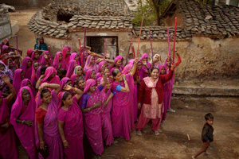

|
|
بسیج 40 هزار زن صورتی پوش با چوب خیزران در هند علیه مردان خشن
سه شنبه27 فروردین 1392
شهرزادنیوز:خشونت و تجاوز گسترده علیه زنان در هند و عدم کارایی راههای قانونی برای مهار این پدیده، موجب شده است که زنی به نام سمپات پال دوی، از ایالت «اوتار پرادش»، به سازماندهی 40 هزار زن با ساری صورتی بر تن و چوب خیزران در دست بپردازد.

به گزارش «ولت آنلاین»، سمپات پال دوی، 52 ساله، مخالف خشونت است، اما اگر تذکر شفاهی به مرد خشونت گرا چاره ساز نشد، زنان گردان او آن مرد را به محاکمه میکشند و اگر لازم شد وی را با ضربات چوب خیزران ادب می کنند. واکنشها به این اقدام وی، از جمله - به گفته خودش - تهدید به قتل بوده و حتا «احمقی» مبلغ 10 هزار روپیه، برابر 150 یورو، برای سر وی جایزه تعیین کرده است.
وی میگوید که ترس ندارد، اما باید مواظب باشد. کسی که چنین کاری می کند، باید دردسرهایش را هم بپذیرد.
این مادر و مادر بزرگ دهها سال است که به نیازمندان کمک می رساند، اما اکنون دیگر تنها نیست و گردان خود را تشکیل داده است که به «باند گولابی» معروف شده است. وی علیه افراد فاسد پلیس و سیاستمداران نیز مبارزه می کند.
سمپات پال دوی در حال حاضر به نماد دفاع از حقوق زنان تبدیل شده و حتی «بالیوود»، هالیوود هند، نیز در حال ساختن فیلمی بر اساس زندگینامه اوست.